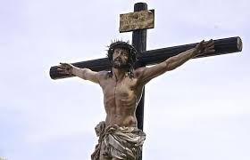

La Semana Santa en Bolivia es una de las festividades religiosas más importantes del calendario litúrgico. Conmemora la pasión, muerte y resurrección de Jesucristo, y se celebra con diferentes tradiciones y rituales según la región del país. Desde las procesiones solemnes en Sucre, hasta las representaciones vivientes en las calles de La Paz, la Semana Santa refleja la fusión entre la espiritualidad católica y las costumbres andinas ancestrales.
Durante esta semana, muchas familias preparan platos típicos sin carne, se organizan viacrucis comunitarios, y los fieles participan en misas especiales. Además, la música sacra, los trajes tradicionales, y los símbolos religiosos llenan el ambiente de recogimiento y devoción. Esta celebración no solo es religiosa, sino también una expresión cultural que une a comunidades enteras en un acto de fe y memoria histórica.